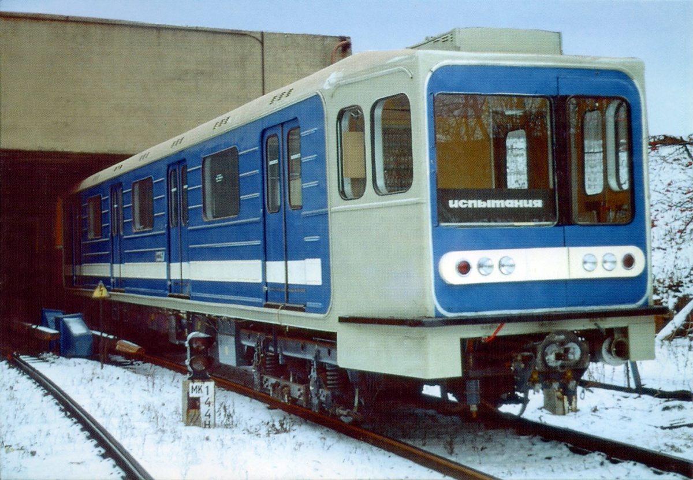
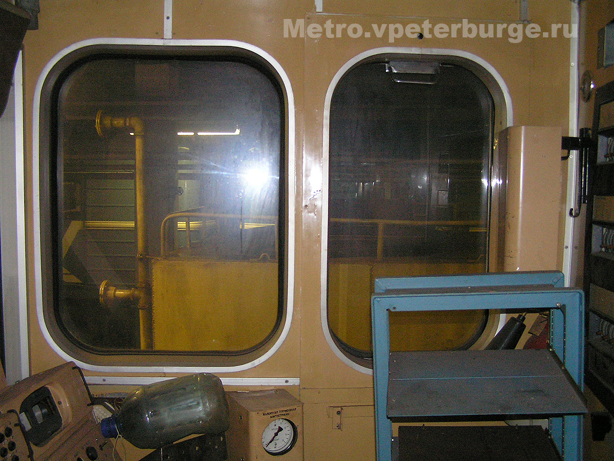
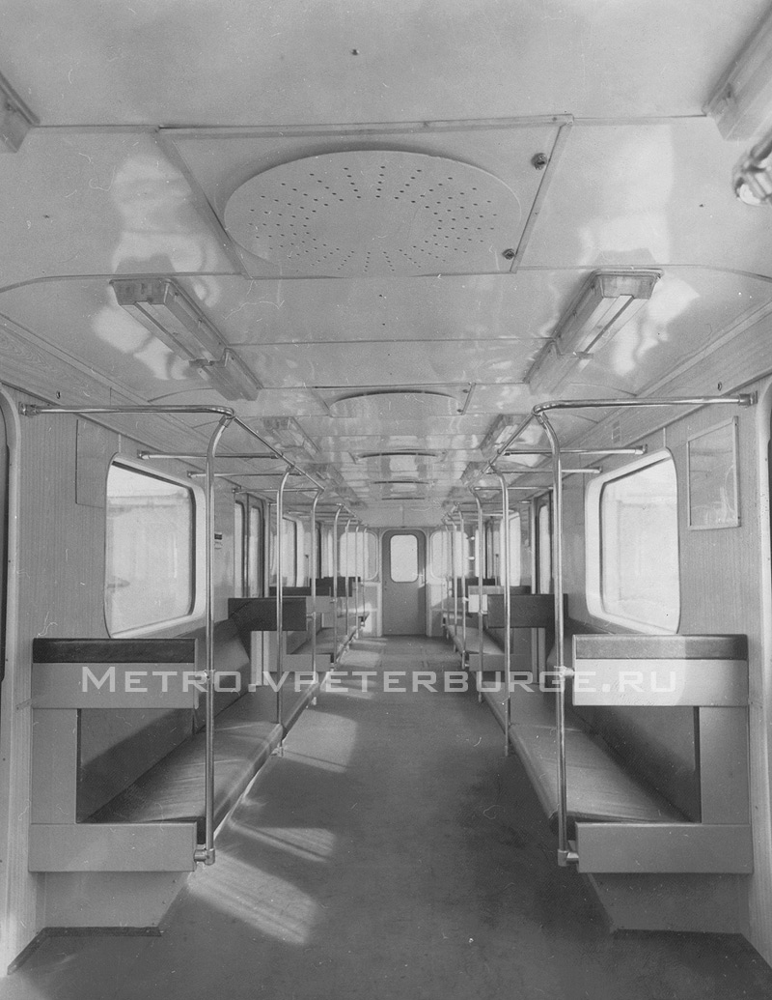
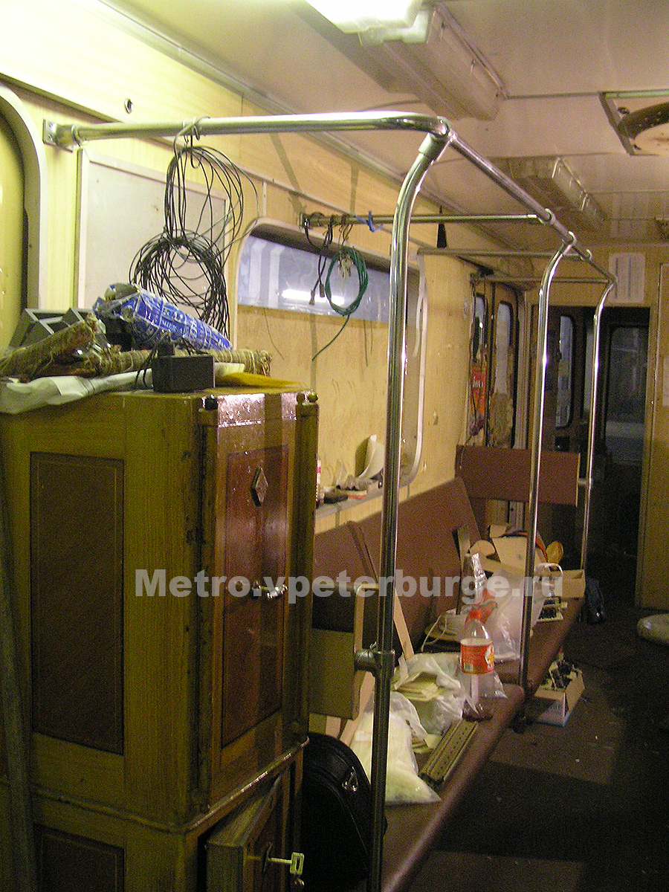
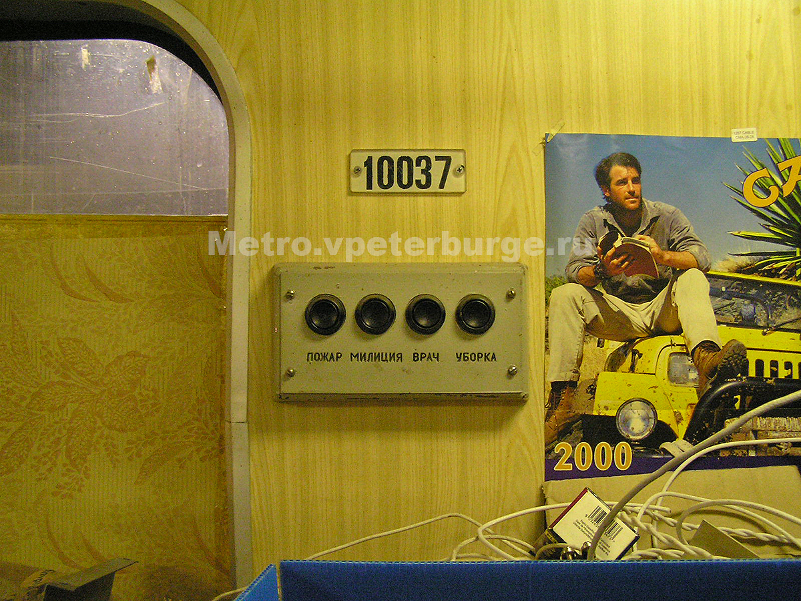
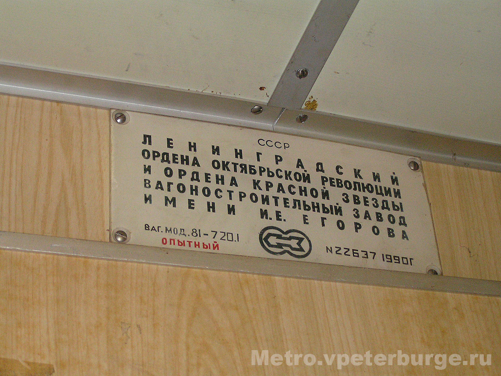
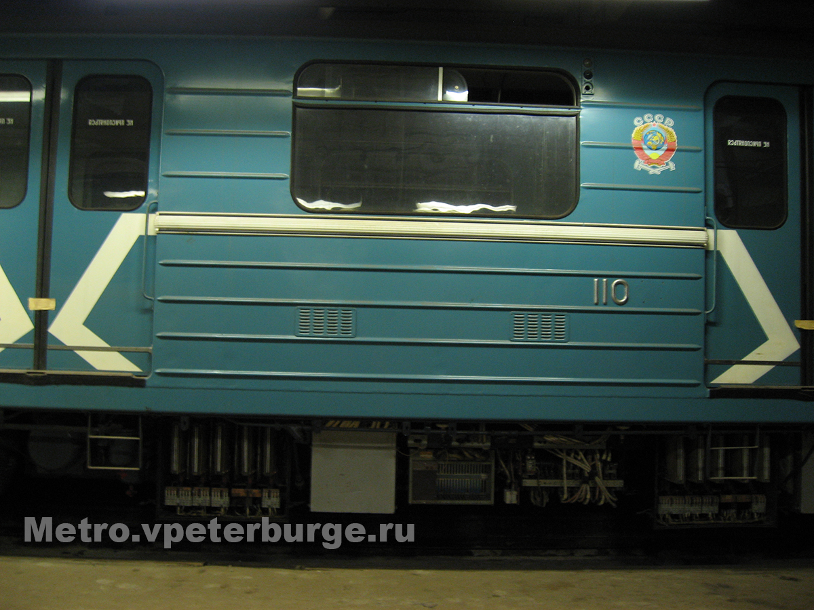
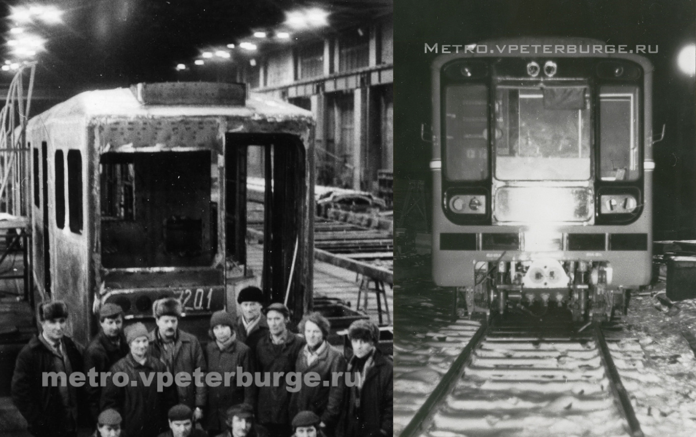

81-720.1/721.1 (ЛВЗ)
81-720.1/721.1 — тип экспериментальных и не пошедших в серийное производство электровагонов метрополитена с асинхронным тяговым приводом, выпущенных Ленинградским вагоностроительным заводом имени И. Е. Егорова.
Проходили испытания в Московском метрополитене. Всего было выпущено 4 вагона, составивших единственный поезд. Уникальный вагон 10037 был утилизирован в сентябре 2009 года.
Общая информация
Состав поезда
10036 — 11027 — 11028 — 10037
| Параметр | Значение |
|---|---|
| Годы постройки | 1990 |
| Страна постройки | СССР 🇷🇺 |
| Завод | ЛВЗ им. И. Е. Егорова |
| Составов построено | 1 |
| Вагонов построено | 4 (в т. ч. 1 опытный) |
| Нумерация | 10037 (опытный головной), 10036 (головной), 11027, 11028 (промежуточные) |
Уникальные особенности
🚃 Вагоны сопровождения
Вагоны 11027, 11028, 10036 были идентичны 81-717.5/714.5 стандартной конструкции и выполняли роль вагонов сопровождения.
⭐ Уникальный вагон 10037
Вагон 10037 имел уникальную внешность и оборудование:
- Нестандартная конструкция кузова (удлинённая кабина)
- Новое электрооборудование
- Асинхронные тяговые двигатели
- Оригинальный дизайн (двухцветная бело-синяя окраска)
- Логотип ЛВЗ на лобовом торце
Это был экспериментальный вагон с принципиально новыми техническими решениями, опередившими своё время.
История поезда
Первый экспериментальный поезд
Ленинградский завод выпустил первый экспериментальный трёхвагонный электропоезд ЭС-720/719.
Постройка 81-720.1
Ленинградский завод выпустил единственный головной моторный вагон с новой конструкцией кузова и опытным электрооборудованием — 81-720.1 № 10037. Также выпущены вагоны сопровождения: головной 10036 и промежуточные 11027, 11028.
Испытания в ТЧ-5 «Калужское»
Вагоны переданы в электродепо «Калужское» Московского метрополитена, где сформированы в четырёхвагонный электропоезд. В ходе испытаний выявлен ряд существенных недостатков, но направление признано перспективным.
Первое известное фото
Первое известное фото поезда было сделано в 1994 году.
Расформирование и хранение
Состав расформирован. Вагоны сопровождения переданы в ТЧ-12 «Новогиреево» на консервацию, опытный вагон 10037 — в ТЧ-1 «Северное».
Утилизация
Все 4 вагона были утилизированы. Уникальный вагон не сохранился.
Технические данные
| Параметр | Значение |
|---|---|
| Тип токосъёма | нижний боковой контактный рельс |
| Род тока и напряжение | 750 В постоянного тока |
| Типы вагонов | Мг/Мп |
| Число вагонов в составе | 4 (проект — до 8) |
| Композиция состава | Мг+2Мп+Мг |
| Количество дверей | 2×4 |
| Сидячих мест | 40 / 44 |
| Длина вагона (по автосцепкам) | 19 650 / 19 210 мм |
| Длина вагона (по торцевым стенкам кузова) | 19 250 / 18 810 мм |
| Ширина | 2712 мм |
| Высота | 3700 мм |
| Высота пола | 1100 мм |
| Диаметр колёс | 780 мм |
| Осевая формула | 2₀-2₀ |
| Ширина колеи | 1520 мм |
| Масса тары | 35,5 / 34 т |
| Материал вагона | сталь |
| Тип ТЭД | асинхронный |
| Макс. скорость | 90 км/ч |
| Макс. служебная скорость | 80 км/ч (ныне максимальная по АЛС-АРС на метрополитенах РФ) |
| Электрическое торможение | рекуперативно-реостатное |
| Ускорение | 1,2 м/с² |
Эксплуатация
| Параметр | Значение |
|---|---|
| Страны эксплуатации | Россия 🇷🇺 |
| Метрополитен | Московский |
| Депо | «Калужское» (испытания), ТЧ-1 «Северное» (отстой опытного вагона), ТЧ-12 «Новогиреево» (отстой вагонов сопровождения) |
| Годы эксплуатации | не эксплуатировались, проходили испытания в 1990-е годы |
| Сохранение | не сохранились (утилизированы) |
Наследие
С учётом применённых на вагоне технических решений и результатов испытаний, как Ленинградский, так и Мытищинский заводы продолжили разработку электропоездов с асинхронными тяговыми двигателями.
🚆 81-550/551/552
В 1992 году на базе 81-720.1/721.1 выпущен полноценный шестивагонный электропоезд 81-550/551/552 — дальнейшее развитие модели. Впоследствии переоборудован в 81-540.1/541.1 (с коллекторными двигателями) и поступил в ТЧ-6 «Выборгское» Петербургского метрополитена.
🚆 «Яуза» 81-720/721
Мытищинский завод заимствовал часть конструктивных решений от 81-720.1 при создании «Яузы»: конструкция сидений и потолка в салоне во многом идентичны опытному вагону.
🚆 81-540.8/541.8
Ленинградский завод выпускал малосерийные вагоны 81-540.8/541.8 с коллекторными электродвигателями для Петербургского метрополитена.
🚆 81-553.3/554.3/555.3
Выпускались вагоны с асинхронными двигателями для Казанского метрополитена.
Интересный факт: Впервые в истории российского метровагоностроения одно и то же обозначение серии (81-720.1/721.1) было использовано повторно — для вагонов принципиально разной конструкции (опытные 1990 года и серийные 2004 года).
Фотогалерея

📸: artem_izmaylovskiy

📸: Андрей Комаров

📸: metro.vpeterburge.ru

📸: metro.vpeterburge.ru

📸: Андрей Комаров

📸: Андрей Комаров

📸: Андрей Комаров

📸: https://metro.vpeterburge.ru
Нажмите на фото для увеличения
«81-720.1 (ЛВЗ) — один из самых необычных и малоизвестных экспериментов в истории Московского метро. Вагон 10037 с асинхронными двигателями и уникальным кузовом мог стать прорывом, но судьба распорядилась иначе. Мы вас будем помнить...»